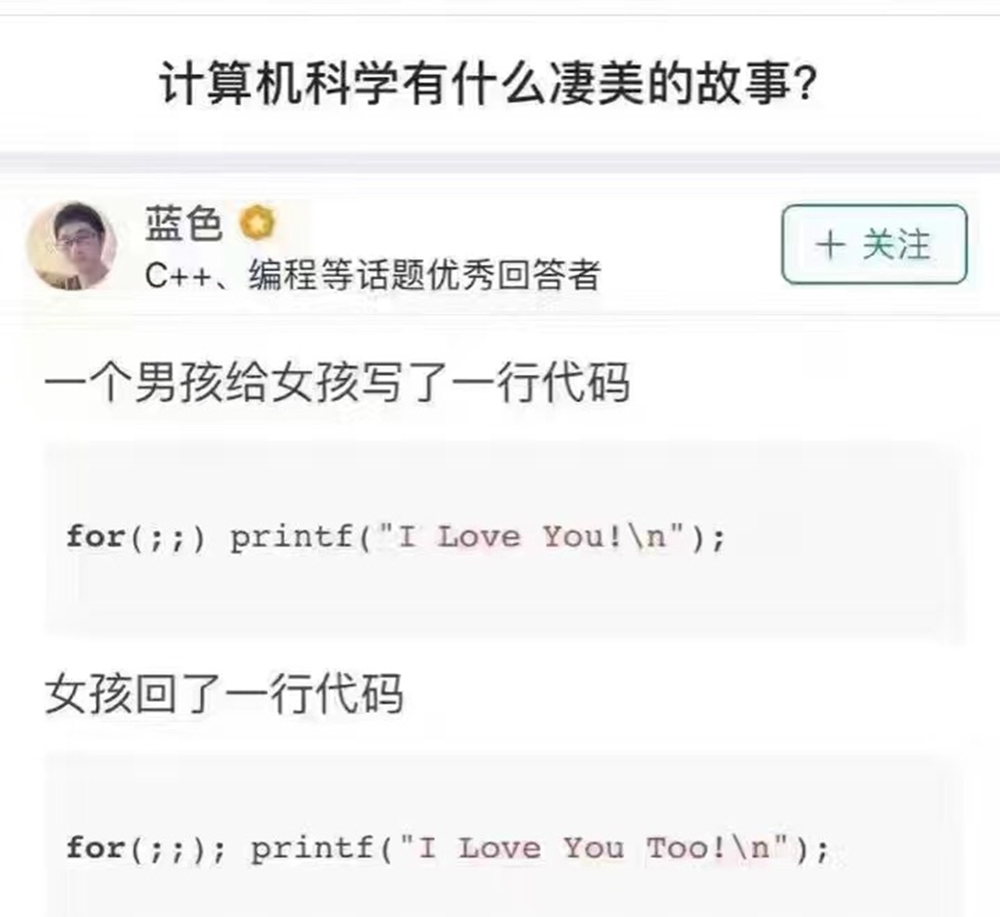

赋初值、循环条件、循环变量各归其位
初值只做一次，判断每轮都做
for / while / do-while 逐行对照
累加累乘、交错级数、枚举、素数
int i = 1, s = 0; // ① 初值 while (i <= 100) { // ② 条件 s += i; i++; // ③ 推进 }
int i, s = 0; for ( i = 1; i <= 100; i++) s += i;
for (表达式1; 表达式2; 表达式3) 循环体语句;
| 位置 | 什么时候执行 | |
|---|---|---|
| 表达式1 | 赋初值表达式 | 进循环前，只 1 次 |
| 表达式2 | 循环条件表达式 | 每轮开头，真才进去 |
| 表达式3 | 循环变量表达式 | 循环体做完后，每轮 1 次 |
i++| 动作 | 跑 n 轮时做几次 |
|---|---|
| 表达式1 | 1 次 |
| 表达式2 | n + 1 次 |
| 循环体 | n 次 |
| 表达式3 | n 次 |
int i, s=0; for(i=1;i<=100;i++) s+=i;
三要素一个格子一个
int i=1, s=0; while(i<=100) { s+=i; i++; }
初值在门外，推进在循环体内
int i=1, s=0; do { s+=i; i++; } while(i<=100);
判断挪到了末尾
int s = 0, i; for (i = 1; i <= 5; i++) s += i; printf("%d, i=%d", s, i);
| 写法（若 n = 10） | i 依次取值 | 次数 |
|---|---|---|
i=1; i<=n; i++ | 1 … 10 | 10 |
i=0; i<n; i++ | 0 … 9 | 10 |
i=1; i<n; i++ | 1 … 9 | 9 |
i=0; i<=n; i++ | 0 … 10 | 11 |
<n，从 1 开始就配 <=n。两个都往同一个方向错，才会刚好多一次或少一次。
s=0; i=1; for( ; i <= 100; i++ ) s+=i;
初值挪到 for 前面，先赋好再进
省 1 → 前面另写赋值；for( s=0, i=1; ; i++ ) { s += i; if( i == 100) break; }
省 2 → 等同于 while(1) ＝永真，必须通过 break跳出循环
for( s = 0, i = 1; i <= 100; ) s += i++;
省 3 → 循环体里必须有让条件变假的动作
| # | 写法 | 最后 s | 最后 i |
|---|---|---|---|
| ① | for(s=0,i=1; i<=100; s+=i,i++); | 5050 | 101 |
| ② | for(s=0,i=1; s+=i,i<100; i++); | 5050 | 100 |
| ③ | for(s=0,i=0; i<100; ++i,s+=i); | 5050 | 100 |
++i 先增后加，加的是 1…100，i 也停在 100。
for(;;) 三段全省略 = 条件永真 = 死循环。for(...) 后面多加分号 = 循环体变空，下一句被排挤到循环外。
int s = 0, i; for (i = 1; i <= 5; i++) s += i; // s = 15 ✓
int s = 0, i; for (i = 1; i <= 5; i++); s += i; // s = 6 ✗
s += i 只在循环结束后执行了一次，此时 i = 6。
for (int i = 0; i < 5; i++) { printf("%d", i); i++; // 多余 }
for (int i = 0; i < 5; i += 2) printf("%d", i); // 0 2 4 ✓
for (double x = 0; x != 1.0; x += 0.1) printf("%.1f ", x);
for (int i = 0; i < 10; i++) printf("%.1f ", i * 0.1);
x < 1.0 - 1e-9 这种区间判断，别用 !=。
for (int i = 0; i < 5; i++) printf("%d", i); printf("%d", i); // i 未定义
int i; for (i = 0; i < 5; i++) printf("%d", i); printf("%d", i); // i = 5
for (int i = …) 里定义的 i，作用域只到循环结束。循环外要用它，就得先在外面定义。
方法1：开关变量 t 翻符号
float s=0; int t=1, i; for(i = 1; i< 101; i++) { s += t * 1.0/i; t = -t; }
方法2：正负分开，各算一个和
float s, s1=0, s2=0; for(i = 1; i <101; i += 2) { s1 += 1.0/i; s2 += 1.0/(i+1); } s = s1 - s2;
t * 1.0 / i 不能写成 t * 1 / i——整数除法先算成 0。
② 方法2 里 i += 2 一次跨两项，说明表达式3 不必是 i++。for (x = 0; x <= 20; x++) for (y = 0; y <= 33; y++) for (z = 0; z <= 100; z++) if (x+y+z == 100 && 5*x+3*y+z/3.0 == 100) printf("%d %d %d\n",x,y,z);
for (x = 0; x <= 20; x++) for (y = 0; y <= 33; y++) { z = 100 - x - y; if (5*x+3*y+z/3.0 == 100) printf("%d %d %d\n",x,y,z); }
int m, i; scanf("%d", &m); for (i = 2; i * i <= m; i++) if (m % i == 0) break; // 找到因子 if (i * i > m && m > 1) puts("是素数"); else puts("不是");
i*i<=m 还避开浮点误差。
{ } 包起来| 情形 | 选它 | 理由 |
|---|---|---|
| 次数已知（1 到 100） | for | 三要素写在一行 |
| 次数未知，可能不做 | while | 先判断，不成立就跳过 |
| 次数未知，至少做一次 | do-while | 先执行，贴合"先试一次" |
| 中途要跳出 | break | 三者通用 |
int s = 0, i; for (i = 1; i <= 10; i += 2) s += i;
答案：s = 25，i = 11
for (int i = 5; i; i--) printf("%d", i);
答案：54321
i 当条件，非 0 即真，i = 0 时退出。
下一讲：break 与 continue · 循环中途如何退出